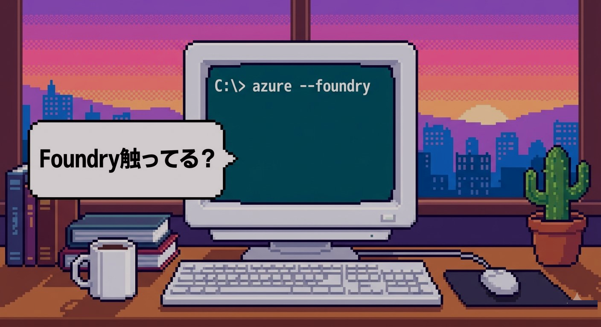
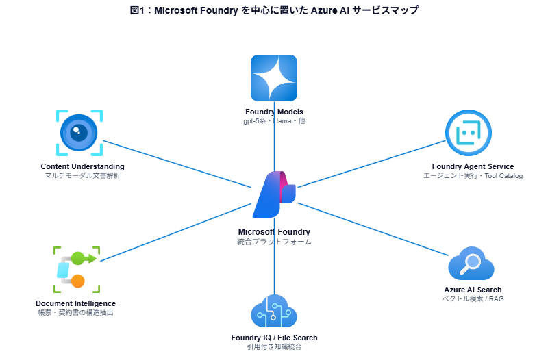
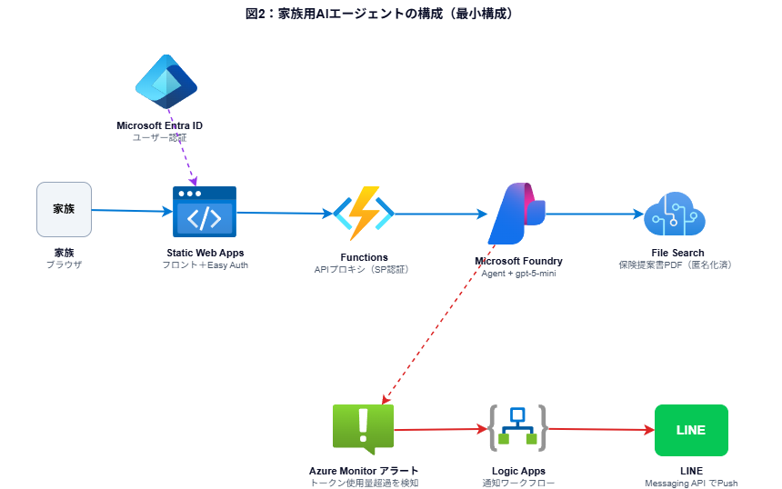

BtoB大企業の多くはWindows・MicrosoftのEnterprise契約を抱え、その延長でAzureがAI基盤の主流となっています。本資料ではAzure AIの中核となるMicrosoft Foundryで何ができるかを軸に、認証・閉域・監視といったAzureならではの装備、約2時間で組み上げた家族用AIエージェントの実装例、そして日々のキャッチアップ術までを、構成図とサンプルコードを添えてまとめた一冊です。
この資料を読むと、何が得られるか
BtoB大企業の多くは、すでにWindowsやMicrosoft 365のEnterprise契約を会社単位で保有しています。Azureの利用契約も同じ枠組みに乗せられるケースが多く、「すでに契約があるから」という導入のしやすさから、AI基盤としてもAzureが選ばれることが圧倒的に多いのが実情です。
その結果、BtoB領域の高単価AI案件は構造的にAzureに集中しています。同じ「AIに触れるエンジニア」でも、Azureを軸に動けるかどうかで、狙える単価帯は一段変わってきます。本資料は、その流れに乗るための地図として書きました。
2026年現在のAzure AI開発はFoundryに集約されています
Azure AI Studio、Azure AI Foundry、Azure AI Servicesといった複数のサービス・ブランドは、現在Microsoft Foundryに統合されました。Azure OpenAIやSpeech、Vision、Languageもすべてこの傘の下で扱う形になっています。BtoB案件のAI開発は、ほぼこのFoundryの範囲内で完結すると考えてよいです。
主要サービスと、企業案件で実際に使われる機能

企業のAIが乗ってくる「業務基準」の中身
BtoB大企業がAzureを選ぶ最大の理由は、ChatGPT直叩きやその他のAIサービスでは標準では揃えられない、「業務に乗せられるための装備」がAzureには標準で揃っているからです。具体的には3つあります。
Private EndpointとVNet統合を使うと、Foundryやストレージへのトラフィックを企業のVNet内に閉じ込められます。インターネット経由の通信を一切させずに動かせるため、機密情報や個人情報を扱う案件でもそのまま乗せられます。
社員のアカウントをそのままAIアプリの認証にも使えます。RBACでAzureリソース単位の権限を細かく設定でき、サービスプリンシパルやマネージドIDを使えばアプリ側からのトークン取得も自動化できます。社内ID基盤との統合がデフォルトで効くのがAzureの強みです。
Azure Monitorでメトリック収集、メトリックアラートで異常検知、Action Groupでメール／Logic Apps／Webhook等への通知振り分けが標準で組めます。Cost Managementと組み合わせれば、トークン使用量の急増もコスト超過もリアルタイムで把握できます。
大企業のAI予算は、ここに流れています
実際にBtoBの現場でよく見るAI活用は、大きく3つのパターンに分かれます。どれもMicrosoft Foundryの範囲内で実装可能です。
社内規程・マニュアル・過去案件資料などをナレッジ化し、自然言語で問い合わせるパターン。Foundry Agent Service ＋ Foundry IQ、もしくはFoundry ＋ Azure AI Searchで組みます。BtoB案件のAIアプリで最も多いユースケースです。
社内システムや外部APIをツールとして繋ぎ、AIが判断しながら一連の業務を自動で処理するパターン。Foundry Agent ServiceのTool Catalog（1,400以上のツール接続が可能）を使い、複数エージェントのオーケストレーションも組めます。問い合わせ対応・申請ワークフロー・データ調査などで使われます。
請求書・契約書・申請書などの構造データ抽出、画像や動画の内容理解。Document Intelligenceで帳票を構造化、Content Understandingでマルチモーダル文書（図表混在のPDFや動画）を読み解きます。バックオフィス自動化の主戦場です。
バックエンド／フロントエンドの選び方と、AI部品の組み合わせ方
AIアプリは、フロントエンドとバックエンドのホスティング選択肢、そしてAI部品（プロンプト・インデックス・エージェント）の組み合わせ次第で、構成が大きく変わります。ユースケースに合わせて使い分けるのが基本です。
バックエンドの選択肢
App Serviceは社内向けの常時稼働Webアプリに、FunctionsはSWAと組み合わせたサーバーレスAPIや、ファイル投入をトリガーにした処理に向きます。Container AppsはDocker前提のチームや、より柔軟なスケーリングが必要な場合に選ばれます。
フロントエンドの選択肢
軽量なフロントエンドや個人開発・小規模アプリはStatic Web Apps。Easy Auth（Entra ID連携）が標準装備で、認証付きアプリが追加実装ゼロで作れます。サーバーサイドレンダリング（Next.jsのSSRなど）が必要な大規模アプリはApp Serviceを選びます。
AI部品の組み合わせパターン
無料〜低価格で動かせる、入口の最短ルート
Azure AIは「触ってみないと分からない」のが本音です。月数百円規模で動かせる最小スタックを以下にまとめました。所要時間は2〜3時間ほどです。
最小スタック構築の流れ
手順の詳細はFoundry公式ドキュメント（learn.microsoft.com/azure/foundry/）と、後述するサンプルリポジトリのREADMEに記載しています。各ステップで詰まりやすい認証周りの落とし穴も併せて書いてあります。
家族の保険提案書PDFを聞ける、実用最小構成のアプリ
保険の提案書って分厚くて読まないですよね。「いつから保障が始まる？」「がん診断時の給付金額は？」をいちいち探すのは面倒なので、提案書のPDFをFoundryに食わせて、家族でLINEのように質問できるアプリを作りました。構築時間は約2時間、月のコストは10円以下です。
構成図

デモ動画
画面右下のフルスクリーンボタンで拡大再生できます。
月額コストの内訳
| リソース | プラン | 目安／月 |
|---|---|---|
| Static Web Apps | Free | ¥0 |
| Microsoft Foundry（gpt-5-mini） | 従量課金 | ¥0〜数円 |
| File Search（Foundry IQ） | 従量課金 | ¥0〜数円 |
| メトリックアラート（1ルール） | 従量 | 約¥15 |
| Logic Apps Consumption | 従量（無料枠内） | ¥0 |
| Action Group | 無料 | ¥0 |
| 合計 | ※家族数人の利用 | 月10円〜20円 |
使いすぎ防止のアラート構成
トークンが急に消費された場合のために、Azure Monitorのメトリックアラート → Action Group → Logic Apps → LINE Messaging API という流れで自分のLINEに通知を飛ばすようにしてあります。Logic Appsは無料枠内（月4,000アクション）に収まるよう、発火時のみ動作する条件分岐を入れています。
毎日の流れと、業務にどう活かしていくか
Azure AIは進化が速く、2025〜2026年だけでも大きな改名や統合が起こっています。私は次の4ステップで「速さ」と「正確さ」を両立させています。
Microsoft公式のAzure UpdatesとMicrosoft 365 RoadmapのRSSをチェック。X（旧Twitter）でMicrosoft関係者やAzure系のコミュニティをフォローしておくと、GAタイミングが流れてきます。
新サービス・新機能はlearn.microsoft.comに必ずドキュメントが立ちます。「What is 〜」「Quickstart」「Architecture」の3つを順に読めば、何ができるか・どう使うか・どこに位置付けられるかが10分で掴めます。
新サービスはまずAzure料金計算ツールか公式のPricingページで料金を確認します。これをやっておかないと「触ったら高そう」で手が止まりがちなので、最初に「最小構成だと月いくら」を把握するのが大事です。
最後に必ず手で動かします。個人のAzureサブスクリプションか、会社の検証環境を借りて、最小構成でデプロイ→画面確認→削除、までやります。読むだけでは絶対に身につかないので、ここまでやってはじめて「使える」レベルになります。